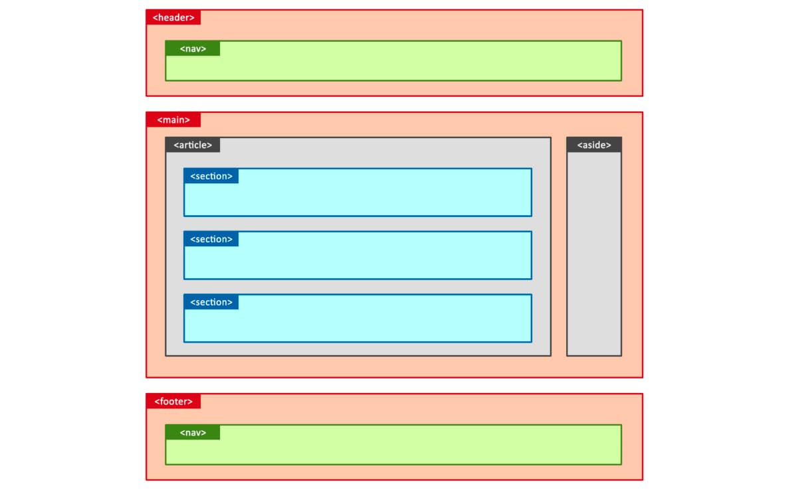

Веб-розробка починається з простого HTML. Саме ця мова дозволяє створювати
структуру веб-сторінок: заголовки, текст, зображення та посилання.
Навіть найпростіший сайт починається з кількох рядків HTML-коду.
Що можна створити за допомогою HTML?
структуровані веб-сторінки
блоги та новини
галереї зображень
технічну документацію
Рисунок 1 — Приклад ілюстрації до статті
Чому семантична розмітка важлива
Опубліковано:
Семантична розмітка допомагає браузерам та пошуковим системам
краще розуміти структуру веб-сторінки. Використання тегів
article, section, header та
footer робить код зрозумілим та впорядкованим.

Рисунок 2 — Структура семантичної HTML-сторінки
Додаткова інформація
А тут секретікі
Не знаю що тут написати, ляляля, прихована інфа
Для виведення тексту використовуйте console.log().
function greet(name) {
return `Hello, ${name}!`;
}
Важливе зауваження щодо використання семантичної розмітки.